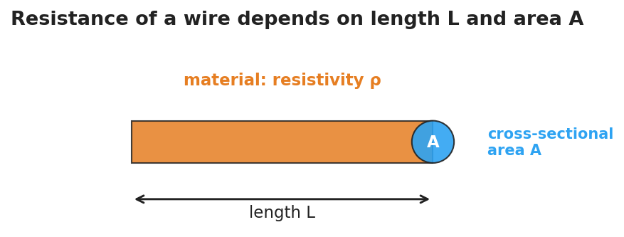
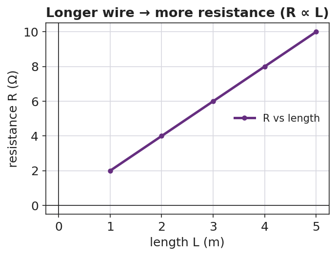
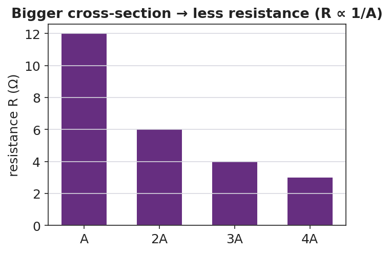

Unit: Current Electricity — Lesson 02: Resistance in a Wire
Phenomenon
The same battery and the same bulb are connected first with a long, thin wire — the bulb glows dim. Then they're connected with a short, thick wire — the bulb glows bright. The only thing that changed was the wire.

Driving Question
What properties of a wire decide how much it resists the flow of charge?
Notice & Wonder
Compare the dim bulb (long, thin wire) with the bright bulb (short, thick wire). List two things you notice and two things you wonder.
Initial Model
At your group's board, predict before you touch the simulation: if you make a wire twice as long (same thickness), what happens to its resistance R? If you make it twice as thick — double the cross-sectional area, same length — what happens to R?
Investigate
This models a wire of one material (fixed resistivity ρ). Drag the sliders to change the length L and the cross-sectional area A. Watch the resistance update — and watch the wire stretch and thicken. Change one slider at a time, just like at the boards.
Resistance R ∝ L ÷ A = 2.0 (relative Ω) · Double L → R doubles. Double A → R halves.


Make It Make Sense
- A wire is made twice as long with the same thickness. By what factor does its resistance change?
- A wire is made twice as thick (double the area) with the same length. By what factor does its resistance change?
- Copper has a low resistivity and nichrome has a high resistivity. Which makes a better connecting wire, and why?
Stuck? Sentence frame
"When the wire's ___ doubles, the resistance ___ because R is ___ proportional to ___."
Key Vocabulary (max 3)
- resistance — the opposition a wire offers to the flow of charge, set by its length, area, material, and temperature, measured in ohms (Ω)
- resistivity — a property of the material itself (symbol ρ) describing how strongly it opposes current; copper is low, nichrome is high
- cross-sectional area — the area of the wire's circular end face (A); a larger area gives charge more room to flow, lowering resistance
Revise Your Model
Return to your Initial Model. Rewrite your explanation for why the long, thin wire dimmed the bulb, using length, cross-sectional area, and resistance.
Return to the Phenomenon
Back to our two wires and the bulb: in one sentence, why did the short, thick wire make the bulb brighter? The short, thick wire has lower resistance, so more current reaches the bulb (I = V ÷ R).
Exit Ticket + Closing Reflection
- Two wires are made of the same material.
(a) Wire B is twice as long as Wire A (same thickness) — how does B's resistance compare to A's? (b) Wire C is twice as thick as Wire A (same length, double the cross-sectional area) — how does C's resistance compare to A's? (c) Name one property of the material itself that affects resistance. - Reflection: Whose explanation at the boards today helped you see the area pattern? Name them.